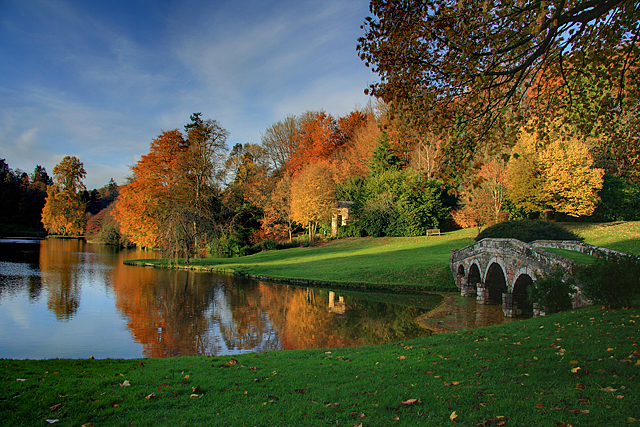

A garden is a planned space, usually outdoors, set aside for the display, cultivation, or enjoyment of plants and other forms of nature. The garden can incorporate both natural and man-made materials. The most common form today is a residential garden, but the term garden has traditionally been a more general one. Zoos, which display wild animals in simulated natural habitats, were formerly called zoological gardens. Western gardens are almost universally based on plants, with garden often signifying a shortened form of botanical garden. Some traditional types of eastern gardens, such as Zen gardens, use plants sparsely or not at all.
The etymology of the word gardening refers to enclosure: it is from Middle English gardin, from Anglo-French gardin, jardin, of Germanic origin; akin to Old High German gard, gart, an enclosure or compound, as in Stuttgart. See Grad (Slavic settlement) for more complete etymology. The words yard, court, and Latin hortus (meaning "garden," hence horticulture and orchard), are cognates—all referring to an enclosed space. The term "garden" in British English refers to a small enclosed area of land, usually adjoining a building. This would be referred to as a yard in American English.
Most gardens consist of a mix of natural and constructed elements, although even very 'natural' gardens are always an inherently artificial creation.
Natural elements present in a garden principally comprise flora (such as trees and weeds), fauna (such as arthropods and birds), soil, water, air and light.
Constructed elements include paths, patios, decking, sculptures, drainage systems, lights and buildings (such as sheds, gazebos, pergolas and follies), but also living constructions such as flower beds, ponds and lawns.